2 Neuroimaging techniques
2.1 Introduction to neuroimaging methods
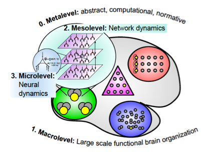
Studying cognitive function in the living human brain is a fascinating enterprise, and the advances in the last decades are impressive, due in large part to the development of non-invasive neuroimaging technologies and analysis methods. These methods, as we will see in the following pages, offer information about two core aspects of brain function: space and time. They offer information about the brain’s detailed physical structure, changes in levels of activation in specific localizations, and fast temporal information of changes in this activity. Also, interference devices allow creating short-lived virtual lesions in specific parts of the brain that provide crucial information about the causal links between brain and behavior.
Nowadays, however, there is no single neuroimaging method that allows us to see all relevant aspects of brain function at once. Rather, each of them provides optimal information regarding one dimension while downplaying others. The brain is a complex multi-level system and different methods have sensitivity only at some of these levels, that is, they offer partial information. Usually, the level of analysis targeted by the researcher determines the choice of method.
The brain works quite fast and with high spatial precision. It is frequent to classify neuroimaging methods according to their spatial and temporal resolution, or precision in these domains. In spatial terms, methods can be sensitive to information happening from the neuron level to the level of large-scale brain regions. Also importantly, some methods are able to offer temporal information at the millisecond range, whereas others have only sensitivity of seconds.
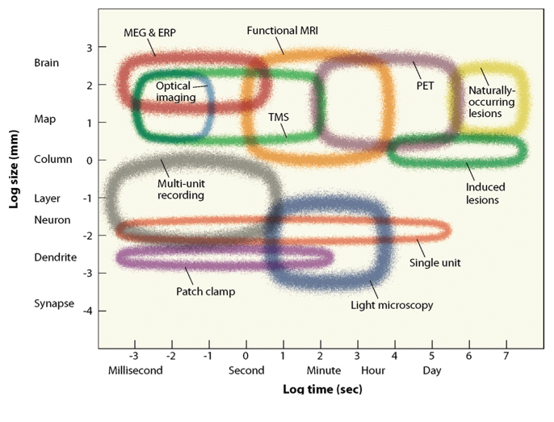
Other dimensions are also important: whether the device records brain activity or interferes/stimulates it, whether it generates damage when being used (non-/invasive) and the property of the brain that it measures (electricity/magnetism or blood flow).
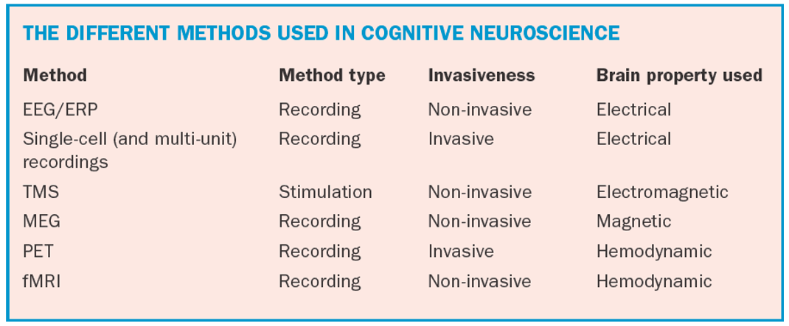
Also important, neuroimaging methods do not allow to “see” the brain in action. The information we obtain from them mixes true data with measurement error and noise (random noise + confound factors), and the researcher has to tease these apart during data analysis and interpretation. And in addition, a crucial element in task-based Cognitive Neuroscience is proper task design. A well-designed paradigm carefully adapted to the neuroimaging method of choice is essential, as it allows interpreting the results in a meaningful way.
We will next cover the main methods employed in Cognitive Neuroscience, organized on the base of the brain properties that they measure, which in turn impacts their spatial and temporal resolution.
2.2 Electrophysiology
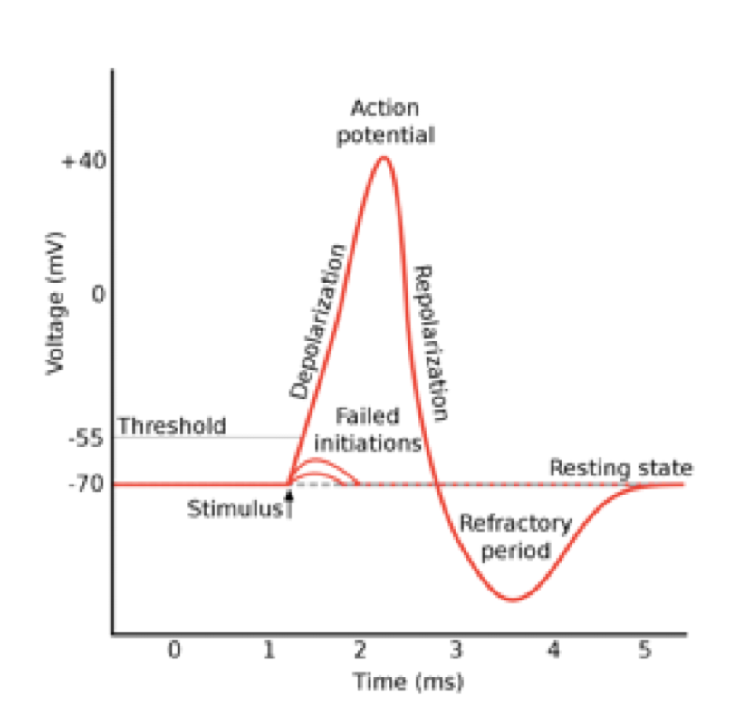
Electrophysiological methods measure the electrical activity that is inherent to brain function. Invasive methods measure neural electrical activity with high temporal and spatial precision, in neurons (single-cell), groups of them (multiunit recordings –MUA- and local field potentials, LFP) and regions (electrocorticography, ECoG). In addition, one of the methods most used in Cognitive Neuroscience is electroencephalography (EEG), a non-invasive technique that measures the combined electrical activity of thousands of neurons working together (synchronously).
The basis of communication between neurons is the action potential, in which the membrane potential of a neuron (which is the voltage difference between the interior and exterior of the cell) rises and falls rapidly. This spike travels through the axon of the neuron until in causes the release of neurotransmitters that impact other connected neurons. An action potential is the output of the neuron, and the unit that is measured by single-cell and MUA recordings.
Inputs to the postsynaptic neuron come from the spikes of presynaptic ones, which are pooled together in the dendrites of the receptive cell. This combined activity, when synchronous (i.e. happens at the same time), sums and generates extracellular electrical currents (generated by transient imbalances of concentrations of ions outside the neurons). These are measured at the local level as local field potentials, and when combined at a larger scale with ECoG and EEG.
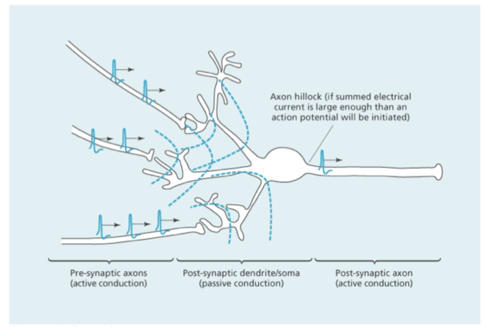
2.2.1 Invasive methods
2.2.1.1 Single-cell recordings
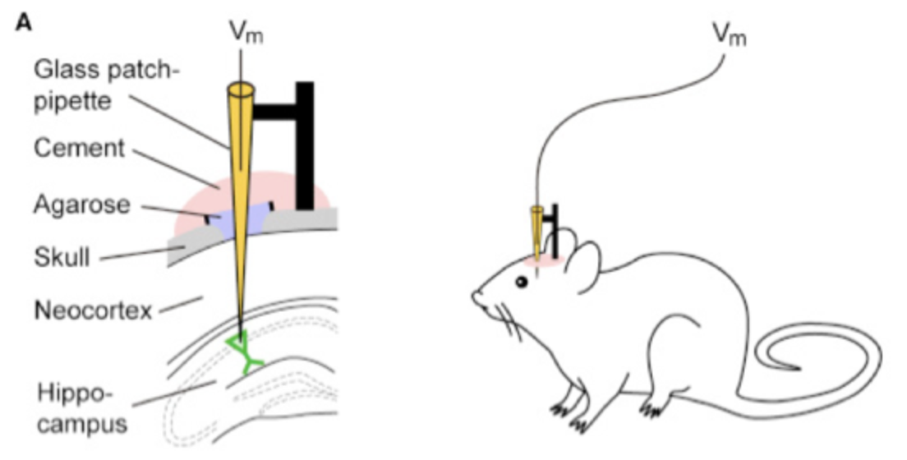
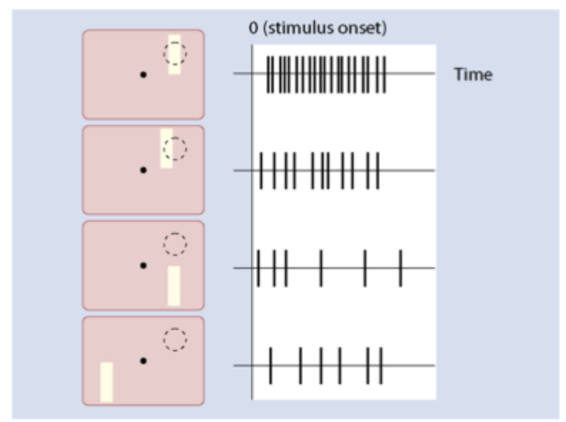
Invasive electrophysiological methods require the insertion of recording micro-electrodes inside the brain. Although tissue damage is minimized, it is unavoidable, and thus these methods are used most of the time with non-human animals. Very thin electrodes allow measuring the spikes (i.e. action potentials) of single neurons or groups of them (MUA), providing very useful information about how neurons respond to different kinds of stimuli and experimental tasks. The unit of measurement in these experiments is the number of spikes that neurons generate per unit of time during the manipulation, in comparison with the number of spikes happening during the baseline (when the experimental manipulation is not present). The assumption is that the higher the number of spikes, the larger the involvement of the cell in the condition under study. Figure 7 shows how the firing rate of a neuron (spikes/second) increases significantly when a bar of light is placed in its receptive field (which is the region of space to which the neuron responds), whereas this decreases when the light falls outside the receptive field.
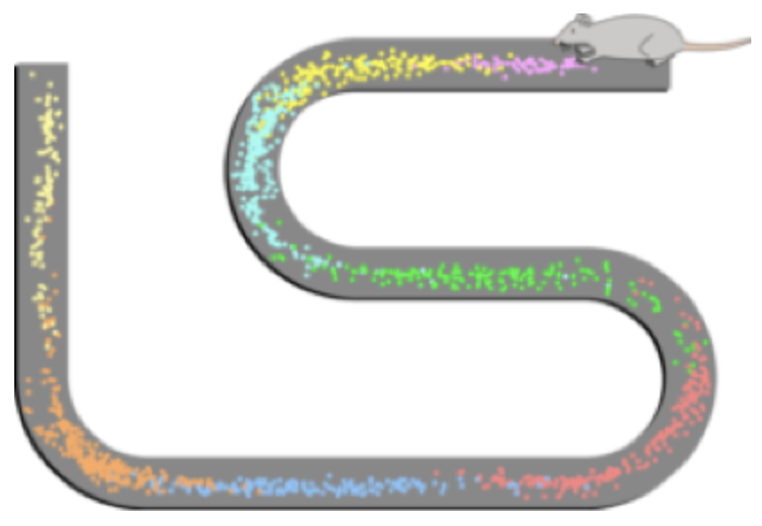
The ability to measure the response of neurons with such precision has significantly advanced our understanding of the mechanisms underlying brain cognitive function. A fine example is the work of O’Keefe, Moser and Moser (psychologists who received the Nobel price in 2014) in the description of place and grid cells. Hippocampal place cells respond when animals are in a certain spot in space (that is, they represent a certain location), and grid cells represent relative locations and distances between positions that the animal encounters, constructing a spatial map of the surroundings that is used for navigation. With electrophysiological recording tools, researchers are unraveling the computations that the neurons perform with spatial information in the service of behavior. Crucially, these investigations are also impacting our understanding of encoding and consolidation of memory of events, which also engage hippocampal areas in communication with cortical sites, and the role of sleep in these processes.
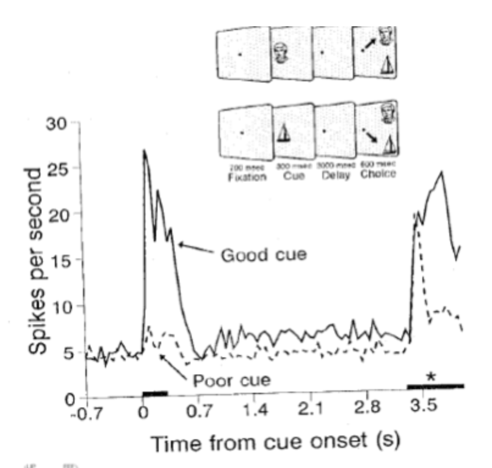
Single-cell recordings performed in monkeys are also very informative of the mechanisms involving high-level processing, such as Selective Attention or Working Memory. For example, Joaquim Fuster, Patricia Goldman-Rakic and others showed that neurons in the lateral prefrontal cortex represent specific stimuli or locations, and that they remain active while animals maintain this information in their working memory (in absence of external stimulation) for future use. Other experiments performed by the group of Robert Desimone show that perceptual neurons in the inferotemporal cortex of monkeys also maintain this information during the delay period of a working memory task.
In rare occasions, single-cell recordings can be performed in humans, when electrodes must be placed inside the brain to find the location of damaged tissue that generates resistant epileptic seizures. In a classic example of this methodology, Quiroga and colleagues (2005) were able to record the response of single neurons located in the medial temporal cortex (hippocampus and surrounding structures) of humans while they viewed pictures of famous people and landscapes. Researchers found that some of these neurons had a highly specific preference for certain famous people and not others, that is, they had a high firing rate for their preferred person and almost no response to all of the other famous people presented. For example, they found these neurons for Jennifer Aniston or Hale Berry. Interestingly, Hale Berry neurons responded to her also when she was dressed as cat woman (with a mask that covered most of her face) and also to her written name. This suggests that these neurons have a highly specific and conceptual code for person identity.


Although the study of spiking rates of isolated neurons provides crucial information about how the brain works, there are other sources of complementary information that is also highly relevant. Neurons do not work in isolation, but rather they form coalitions of many neurons that respond or fire in a synchronous manner. These pools of neurons generate extracellular local field potentials, which fluctuate in up and down states that correspond to different degrees of excitability of the neural population. These are windows of opportunity for the transmission of information between populations of neurons, and conform the basis of communication between them. These local field potentials (LFP) thus represent local computations and are recorded also with invasive micro-electrodes placed in the extracellular space. They are often described in terms of the frequency of the oscillations, as we will see later for non-invasive EEG.
2.2.1.2 Electrocorticography (ECoG)
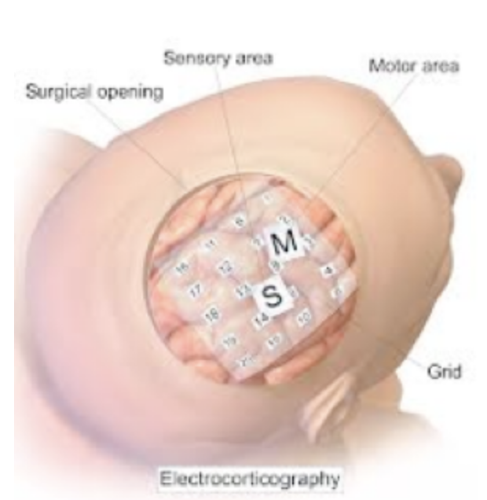
The ECoG method uses grids of electrodes placed on the surface of the brain (which requires a previous craniotomy), and it is a method frequently used in presurgical evaluation of human patients with intractable epilepsy or other neurological conditions. This technique also measures LFP (synchronized postsynaptic potentials). Although its spatial resolution is smaller than LFP measured with invasive intracranial electrodes, this technique applied to humans offers an exceptional temporal and also quite good spatial resolution, and thus although its use is strictly limited, it offers very valuable information about cognitive function in the human brain.
2.2.2 Non-invasive methods
2.2.2.1 Electroencephalography (EEG)
At the beginning of the XXth century, Hans Berger set his mind to study the neural basis of psychic events, trying to find an explanatory mechanism for telepathy based on the brain’s electrical activity. He was able to measure this electrical activity by placing electrodes on the scalp of humans, and in 1929 he published a paper where he first described the EEG of people of different gender and ages. EEG can be characterized by its frequency, which is the speed of the electrical oscillations or number of cycles per second, expressed in Hertzs (Hz). Berger divided these oscillations into different frequency bands, named after letters of the Greek alphabet.
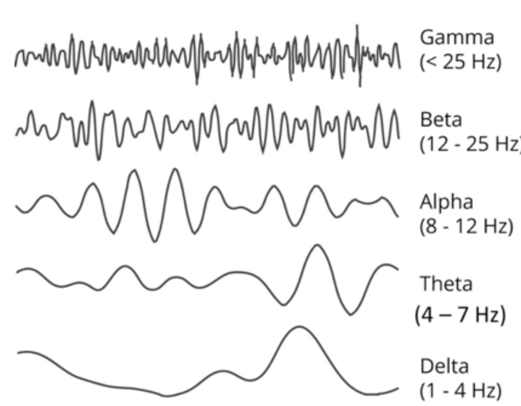
EEG is often acquired using several electrodes at the same time, placed on the scalp. Classic montages use the so-called 10-20 system, and modern devices have extended the number of sensor up to 256 electrodes, to increase head coverage and facilitate source localization.
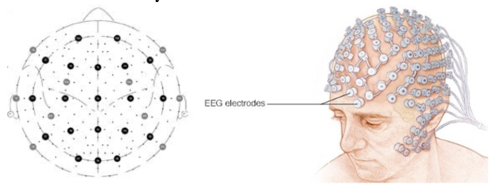
Although EEG has been known since Berger’s discovery, for decades there was no clear understanding of the link between psychological function and frequency bands, other than gross associations between them and alertness states (e.g. Delta is most obvious in deep sleep, Alpha in drowsiness and Gamma in alert states).
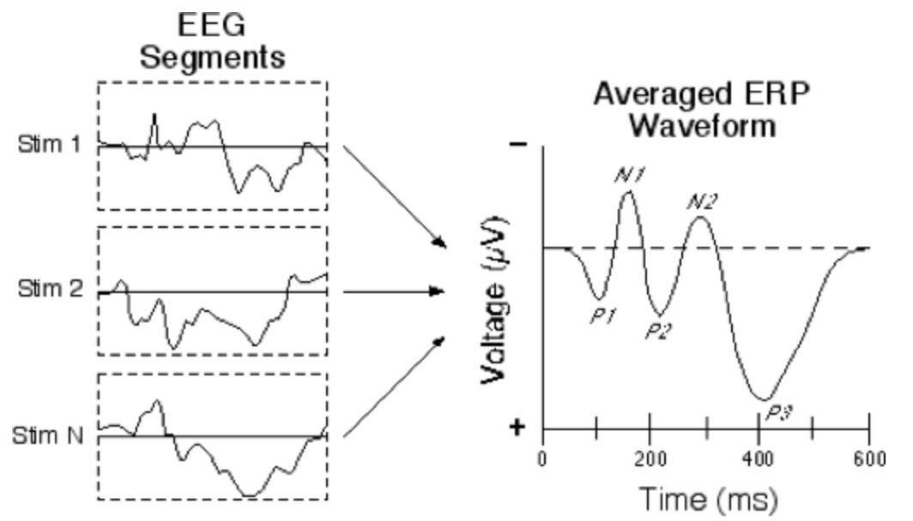
An important step forward in the use of EEG to advance knowledge about cognition in the brain came from the discovery of Event-Related Potentials (ERP). Here, the small changes in voltage triggered by external events (e.g. the onset of a stimuli, a button press, a decision between to options, etc.) are extracted from the background EEG data by presenting the same external event many times and averaging across presentations. The background EEG, which cycles between positive and negative voltage, is considered as noise, and as the events of interest appear unrelated to this, averaging causes background EEG to tend to zero due to the positive and negative voltages cancelling each other out.
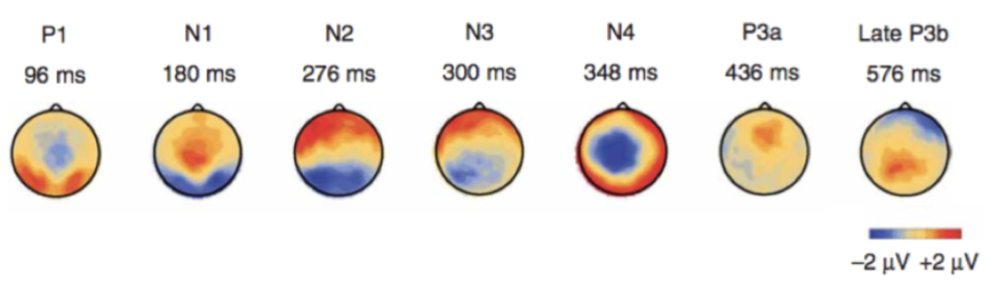
The resulting ERP consists of a series of peaks of positive and negative voltages that appear with a different distribution (topography) on the scalp at different moments in time. ERPs are thus characterized by their polarity (with P for positive and N for negative), their timing in milliseconds and their topography (the location on the scalp where they appear). The literature on ERPs is full with experiments linking well-known ERPs with cognitive functions: the P1 and N1 appear over posterior electrodes and are labeled as perceptual potentials, linked to the processing of external stimuli; the frontal N2 with inhibition; the P300 appears on central channels and is linked to later response-related processes; the N400 to semantic processing.
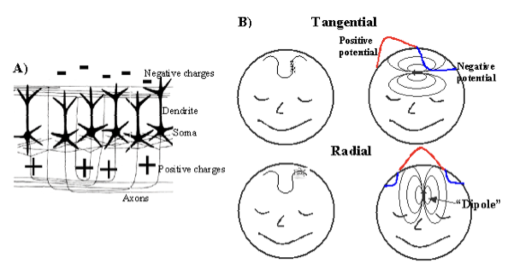
It is important to note that the polarity (positive, negative) of ERPs has nothing to do with their function but rather to the orientation of the pool of cells that are its source (also known as dipoles). Electricity in groups of neurons can be understood in the same manner as a battery, which has a negative and a positive pole. If the source is oriented in a manner where the negative side is close to the scalp and the positive towards the inner part of the brain we will measure a negative peak, whereas it will be positive in the opposite situation.
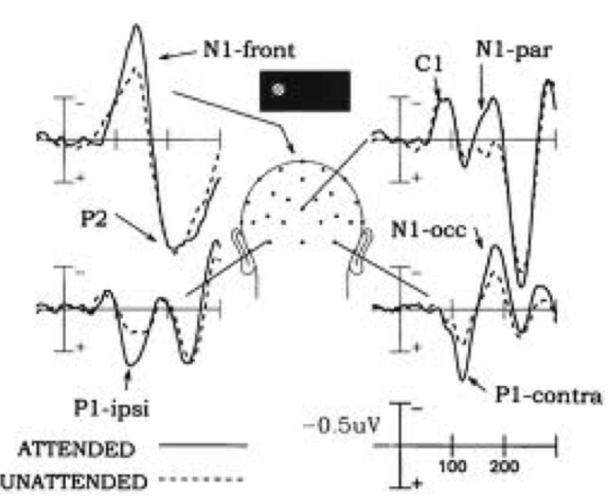
ERPs have been used extensively to test psychological theories and their underlying neural basis. For example, in the field of selective attention there is a long-standing debate of whether the beneficial effects on behavior caused by attending to something (in contrast to ignoring it) were due to attention improving the perceptual analysis of the information or rather its privileged access to consciousness and response effectors. To settle this, Steven Hillyard and others conducted several experiments where they contrasted the ERP of attended vs. ignored stimuli, showing that attended events generate larger P1 and N1, thus supporting the notion that selective attention enhances the perceptual representation of information.

Another fruitful approach is to use ERP as markers of potential differences between different groups of populations. For example, knowing that the N2 potential has been associated with inhibition, it can be used to compare the responses of children with and without attention deficit-hyperactivity disorder and see whether their N2 differ, which would be a suggestion that they have different inhibitory abilities.
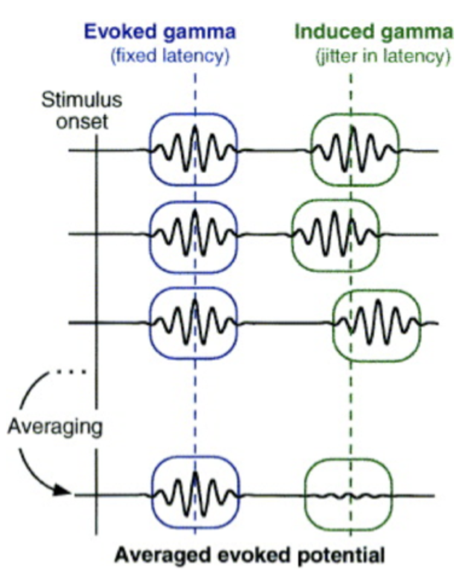
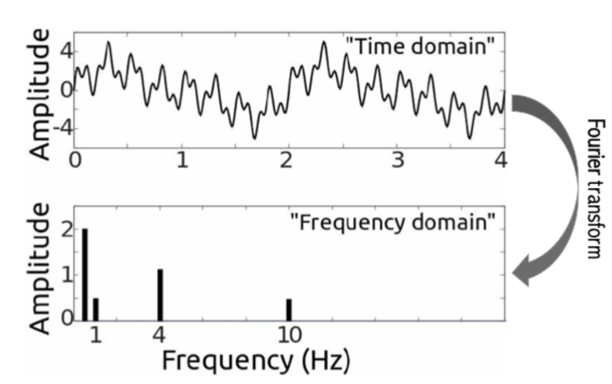
ERPs are reflections of event-induced changes in the electrical signal that we can measure from the brain. However, there is much activity in the brain that is not triggered by external factors but rather takes place endogenously (remember the analysis of resting state data described in the previous chapter). The timing of this information is not locked to external events, and thus it is lost during the averaging used to extract ERP. An alternative and very useful approach are time-frequency analyses, which transform the EEG signal into different frequency bands and correlate these frequencies with the manipulation of interest.
As an example, using time-frequency analysis Mike Cohen showed that the amplitude of the Theta band over fronto-central electrodes was a better predictor of the individuals’ ability of inhibition during a flanker task than the corresponding N2 potential measured at the same time. This and other results suggest that time-frequency analysis represent a valuable addition to the electrophysiological analysis tools available in Cognitive Neuroscience.
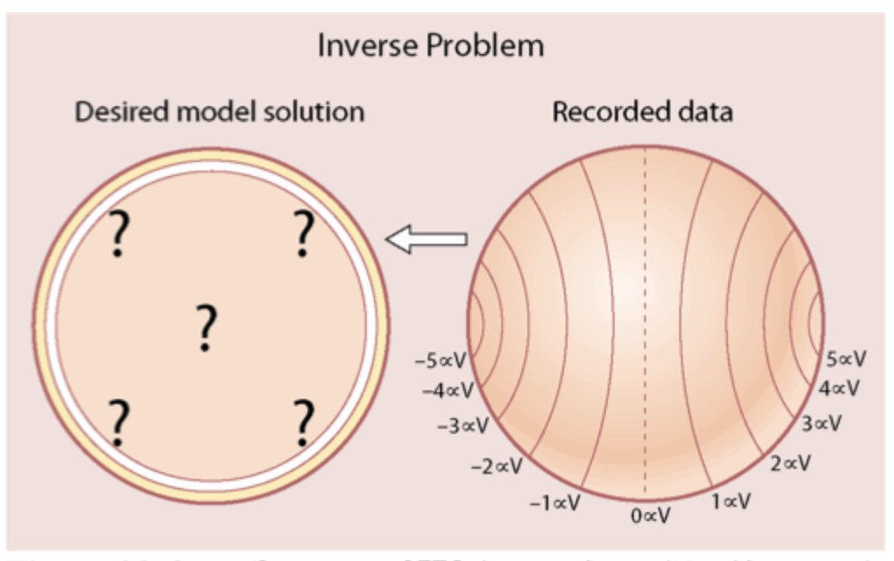
Whereas EEG has excellent temporal resolution, as it offers information about neuron functioning in the millisecond range, it has poor spatial resolution. The electrical signal is fast conducted along the tissue and also gets distorted as it travels through the brain, meninges and skull, and thus the neural origin of the signal measured by the scalp electrodes is hard to locate. This is known as the inverse problem: for a given set of EEG data, there are many potential configurations of brain sources that could generate the same pattern of data. Several mathematical methods, known as dipole modeling, have been proposed to alleviate this problem. These are used in clinical settings (e.g. to localize the source of epileptic seizures with EEG) and also in research (to study the localization of effects observed with EEG data).
2.2.2.2 Magnetoencephalography (MEG)
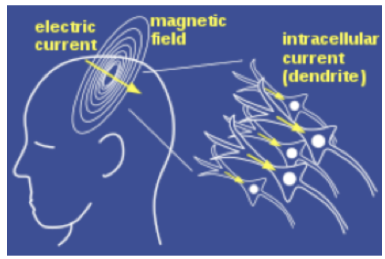
Electricity and magnetism are two forces intricately linked. MEG is the counterpart of EEG, as it measures the magnetic fields created by the electrical activity of pools of neurons working together. These magnetic fields, however, are very weak and need highly sensitive sensors to be recorded (called SQUIDs), which are surrounded by liquid helium to provide an optimal recording environment.

MEG has the same exceptional temporal resolution as EEG, and a better spatial one, because the magnetic fields suffer less distortion than their electric counterparts, and thus source localization with MEG has higher precision than when applied to EEG data. However, the cost of MEG is much higher than that of EEG, and thus its use is much more restricted.
As with EEG, MEG can only detect the activity generated by large pools of neurons that are oriented parallel to each other, because otherwise the positive and negative currents cancel each other out before reaching the scalp (this happens, for example, for brain nuclei such as the thalamus). This means that these recording devices do not detect part of the brain’s activity.
Overall, neuroimaging techniques that rely on the electromagnetic properties of brain activity provide an excellent temporal resolution and a range of spatial resolutions, from the very good of single-cell and MUA recordings to the low spatial precision of EEG. Another excellent characteristic of these techniques is that they measure the activity of the brain directly, which is an important advantage compared to neuroimaging techniques that we will see next.
2.3 Brain imaging
The quest for understanding how the brain supports cognitive function needs methods that allow studying its different parts separately and with good accuracy. Brain imaging methods allow this. They take advantage of the varying properties of different tissues that conform the brain (cerebrospinal fluid, white and grey matter, oxygen concentration in blood), and that react differently when stimulated through various means.
Initially, clinical settings relied on Computerized Tomography (CT), which employs radiation. Skull and brain absorb radiation in different degrees and this is measured and used to plot them. This technique however has a rather poor spatial resolution as it does not allow distinguishing white from grey matter and see the details, and because of this has little use for research purposes. The development of Magnetic Resonance Imaging represented a huge step forward, initially for clinical purposes and soon after also for research.
2.3.1 Magnetic Resonance Imaging (MRI)
MRI provides images of the macrostructure of the brain in a safe, non-invasive manner with unprecedented spatial resolution, and it does so without any kind of radiation. Rather, it employs the magnetic properties of the different body tissues, and measures their differential response to radio-frequency stimulation to reconstruct images of the internal organs of the body (including, but not restricted to, the brain). The work of Lauterbur and Mansfield, based on previous discoveries by Raymour Damadian, led to the invention of this technology and to the award of the Nobel prize in 2003.
The MRI scanner generates a large magnetic field, which is always present and determines its strength. Scanners of 1.5 Tesla are common in hospital settings, 3T is the current most common strength for research purposes and some laboratories already work with 7T devices. These magnetic fields are very powerful, much larger than the magnetic field of the planet earth (0.0001 T).
MRI takes advances of the susceptibility of hydrogen atoms to variations in the magnetic field, and to the fact that these atoms appear at varying concentrations in different body tissues. When a person enters the MRI, the hydrogen atoms of the body (spins), which are usually oriented at random, align with the strong magnetic field of the scanner. A radio-frequency coil applies excitatory pulses that disturb this alignment and displace the orientation of spins, and the MRI measures the energy that spins radiate during relaxation (when returning to the aligned state). As different tissues have varying concentrations of hydrogen, this information is used to reconstruct structural images of different kinds, being the T1 and T2 the most common structural images for research purposes.
2.3.1.1 Morphometry
Structural brain images are not only useful to study the anatomy of the human brain per se. These images are also used to extract indices of individual variability between different groups of people and study how these differ.
Voxel-brain morphometry (VBM) is an analysis technique that looks for differences in gray matter volume in different brain regions. MRI images are constructed by voxels, which are volumetric 3D cubes of approximately 1mm3. In VBM, the voxels of T1 structural images are segmented into gray and white matter and cerebrospinal fluid, and the amount of gray matter per volume is used to predict individual differences in the cognitive function or mental faculty of interest, being this for example developmental stage, intellectual ability or skill in a certain domain.
VBM has been used, for example, by researcher Eleanor Maguire to investigate how the extensive training in spatial navigation that London taxi drivers undergo changes the structure of their hippocampus, a brain structure tightly linked to this ability. Results of many investigations lend support to the notion that some individual differences in certain parts of the brain are related to the ability in the cognitive processes they support. Specifically, Maguire and her team demonstrated that the volume of the posterior hippocampus correlates with the number of years of practice in spatial navigation that drivers had.
2.3.1.2 Diffusion tensor imaging (DTI)
Whereas the brain’s gray matter corresponds to the neurons’ body, where information is processed, cognitive function also relies on the communication between brain regions, which is accomplished through the white matter, or the neurons’ axons. Research has shown that the integrity of the white matter bundles that connect different regions is sometimes related to the efficiency with which people are able to perform tasks that require the computation carried out by the connected areas. An index of this can be obtained with MRI scanning, again taking advantage of the susceptibility of hydrogen to strong magnetic fields to measure water diffusion.
DTI employs scanning sequences that are sensitive to the movement of the hydrogen protons present in water. In a medium without restriction, water molecules move at random. In the brain, however, water cannot move freely due to the structure of the tissues, which limits the movement in specific directions. In axons, movement has a stronger direction perpendicular to them (due to the cell membrane and myelin sheath limiting the other directions). The strength of the direction of the movement (diffusion) is reflected in the so-called Fractional Anisotropy (FA) index, which varies between zero and one. Zero corresponds to equal movement in all directions whereas 1 reflects movement in a single direction. White matter fibers with higher integrity result in higher values of FA (as the movement is better contained), as well as more myelin (as the insulation is better). There are other factors unrelated to white matter integrity that also affect this index, however, such as the geometry or complexity of the path (as crossing fibers and higher complexity may reduce FA due to multiple directions existing in the same place). Careful interpretation of the results is needed to take these confounds into account.
FA values are also used to reconstruct in 3D the fiber bundles that connect distant regions, though tractography. This method offers indexes of the integrity of long association fibers such as the arcuate, uncinate or longitudinal fasciculi. This is extremely useful in clinical settings, to diagnose damage to fiber bundles that does not appear in structural scans such as the T1. But in addition, it also offers invaluable information for research, as the integrity of the connectivity between brain areas often influences cognitive functions in healthy people. A large part of this research relates to plasticity mechanisms, as development and learning alter the myelin of the white matter tracts involved in specific cognitive functions.
2.3.2 Functional imaging
2.3.2.1 Positron emission tomography (PET)
PET measures metabolic activity in the body using short-lived radioactive tracers. One of its major contributions to cognitive neuroscience is its ability to measure blood flow in specific parts of the brain, which relates to the function (not the structure) of the region. To do this, radioactive tracers (such as oxygen-15) are injected into the blood stream. When neurons are active, their metabolism increases, and this triggers an increase of blood inflow; when the blood is marked with radioactive tracers, these will appear in higher concentration in active regions, and the signal detected with the PET scanner will have higher intensity.
PET was among the first neuroimaging methods with quite good spatial resolution, and was the technique initially used by Posner and Raichle when translating mental chronometry from experimental psychology into neuroscience research. Its use in research nowadays is very limited in scope, mainly for the drawbacks it presents. First, the injection of radioactive tracers is rather invasive and thus it cannot be used in children or elderly people. In addition, its temporal resolution is quite poor. The average duration of the tracers used is about 30 seconds, and thus PET only provides an image of the brain activation collapsed across this long temporal window. This is a very long time window, not fit to study fast mental processes.
2.3.2.2 Functional MRI (fMRI)
The BOLD signal
As mentioned before, when a brain region is active its inflow of blood increases, and this generates the signal that is picked by the MRI. More concretely, fMRI is based on the BOLD (Blood Oxygen Level Dependent) signal, which reflects the ratio of oxyhemoglobin vs. deoxyhemoglobin in the blood. Hemoglobin is the molecule that transports oxygen in the blood, so the need for energy that neurons have when they work is partly supplied by an increase of oxyhemoglobin in the blood. This increase peaks about 5-6 seconds after the increase of activity. Oxygenated and deoxygenated blood have different levels of magnetic susceptibility, and this difference is the key to measure the BOLD signal with fMRI.
The change in time of the BOLD signal is called Hemodynamic Response Function (HRF), and this is the basic unit of measurement with fMRI. When a stimulus is presented, first there is an initial dip, or decrease in oxygenated blood (due to the extraction of oxygen from the blood by the neurons) and after 5-6 seconds there is an increase of oxygenated blood (named overcompensation), which returns to baseline levels around 20-25 seconds. Experiments that employ this technique analyze how well the BOLD patterns measured during the task correspond to the shape that would be expected if a region were activated by the presentation of the stimuli, and apply statistical methods to evaluate the extent to which brain areas activate in response to manipulations of interest.
As the previous paragraphs hint, fMRI measures neural activity in an indirect way. That is, it does not measure neural activity per se (as electrophysiological techniques actually do), but it measures the consequences that neural activity has on blood-derived signals. Although this difference may seem trivial, it has important consequences for the interpretation of the data and control of confounds.
The subtraction method
Separating the background activity of the brain from the part that is linked to the mental function of interest is not straightforward. The whole brain has constant blood and oxygen supply, and thus just observing brain activity per se shows most of the brain being active. To overcome this problem, Posner translated to the scanning environment the approach of mental chronometry and subtraction of conditions ideated by Donders. Within this subtraction approach, experiments are designed to compare the relative activations in two conditions, the experimental vs. the control. Bran activation is measured in both conditions and these are subtracted from each other: the areas that remain active are associated with the process(es) that differentiate the two experimental conditions.
For example, a researcher interested in localizing the parts of the brain that are involved in face processing, may present participants a set of human faces while they view them as their brain is scanned with fMRI. S/he could give them a task to keep their attention on the stimuli, such as judging if the images are presented in color or in black and white. If the researcher only acquires trials with faces present, s/he will find that most parts of the brain are active. The question is, which of those areas are involved in face perception per se and not in other bits not directly related to face perception, such as basic perceptual analysis and object contour detection, color processing, decision-making or motor responses? To isolate face-related activity, the researcher needs to find a control condition, which should contain all those processes not related to face perception. For example, the control condition may present colored masks of different patterns and colors, which are rather similar to faces, and ask participants to make the same decision and motor responses (e.g. color judgment) When this control related activity is subtracted from the activity observed during face perception, regions involved in face perception will remain but the common ones will be removed.
Finding a perfect control condition, however, is not straightforward, as it is common that the differences between the two conditions are not exclusive to the process of interest. In the example above, faces are more likely to generate emotional reactions or aesthetic judgments than colored masks, which may affect the regions observed. The choice of control conditions always has to be considered carefully, and this information has to be taken into account during the interpretation of results.
Experimental designs
The experimental conditions in the design can be arranged in different manners, and this choice has a large influence on the statistical power and temporal resolution of the results, among other things.
In Block Designs, stimuli belonging to the same condition are grouped and presented closely in time in blocks. These blocks have a relatively long duration (15-20 secs), and are presented in an alternating fashion with the control condition.
Block designs present a very high statistical power (i.e. they can detect subtle effects), and because of this they are the choice for typical localizers (e.g. localizing the areas underlying face processing). However, they have very low temporal resolution because the individual activity generated by each event in the block cannot be separated, and because of this they are not well suited to study typical cognitive processes such as memory retrieval.
Event-related designs are a solution to this problem. Here events of different conditions (experimental and control) are presented intersected or mixed, with time intervals of varying durations between them. These intervening time intervals of varying duration allow the application of mathematical tools (General Lineal Models, GLM) to extract the differential activations generated by the events.
These event-related designed are much more frequently used in all kinds of experiments in Cognitive Neuroscience, as they allow much more flexibility and are more easily adapted to typical trial arrangements in Cognitive Psychology. These designs allow, for example, to separate trials depending on whether the person was able or not to remember the information memorized, or to mix congruent and incongruent trials of a Stroop task. The main drawback is their lower statistical power compared to block designs, which makes them less sensitive to detect subtler effects.
Parametric designs are a subtype of event-related designs that avoid the need to perform subtractions between conditions. Here, the cognitive event of interest is manipulated in a continuous manner, and associations are drawn between brain activity and increases in the variable of interest, rather than categorical differences as in the subtraction approach. An example would be to manipulate the number of items that a person has to hold in mind during a Working Memory task, and to find the regions in the brain that increase their activity with the number of items.
🚨Interpreting fMRI data🚨
Making sense of colorful brain pictures obtained with fMRI may seem straightforward, but it should not be taken lightly. From data collection to obtaining the images displaying brain activations, many pre-processing steps have to be performed on them. Among other things, data need to be corrected for distortions due to head movement, individual brains are “normalized” to match the shape and size of a standardized brain and data are blurred to conform to statistical assumptions. Then statistical analyses comparing the conditions of interest are performed, which require correction for multiple comparisons to avoid false positives. The colors depicted in the brain images are not direct neural activity, but rather regions with statistical values higher than the statistical threshold. And it always should be kept in mind that the resulting image depends on the experimental and control conditions manipulated.
There are some common assumptions during image interpretation that are not always held. First, given that fMRI is mostly sensitive to the input of an area (rather than its output) activations are not always unambiguously tied to excitatory mechanisms, but they could also relate to the area being inhibited. Also, a lack of increase of activation does not mean that the area is not relevant to task performance, and a decrease of activation does not mean that the area is not involved in the cognitive function studied. Several results relying on multivariate pattern analyses show that areas that show no increase of activation or even a decrease may contain information that is relevant to perform a certain task.
Importantly, the methods described so far (electrophysiological and brain imaging) are correlational in nature, that is, they only reveal brain markers that covary with the manipulations of interest. But correlation does not imply causation, that is, these methods do not prove that the areas highlighted are necessary to perform the studied function. In the same way as the shade of objects is always present but does not have a causal role in the object’s function, the activations observed could be a consequence of other unknown factors that covary with our manipulation (such as how the light impacts objects in the domino’s example). To show that a region is necessary for a certain computation, it has to be proven that a lesion to that region impairs or disables that function. This type of evidence has been obtained studying the mental deficits of neuropsychological patients and employing interfering/lesion methods in healthy participants.
2.4 Lesion and stimulation approaches
Lesion methods infer the function of a region (or cognitive mechanism) by removing it and studying the effect that this has on how the system works. For example, if damage to a region disrupts reading, but not speaking or perceiving, then it could be concluded that the region is specialized for some aspect of text processing. Disruption of brain function happens through natural damage in humans (strokes, etc.), elicited damage (e.g. animal models), or non-invasive temporary changes induced electromagnetically (TMS).
2.4.1 Neuropsychology
This discipline has an experimental and a clinical side. In experimental terms, neuropsychology studies how naturally occurring damage in different parts of the human brain impacts the patient’s cognitive function. In addition to study single-case patients, where observations are restricted to specific patients, neuropsychologists also work with groups of patients that have suffered similar lesions.
In observations termed single dissociations, the researcher studies how a specific lesion damages a certain cognitive function. For example, a certain lesion may damage the reading of consonant letters but not vowels, which suggests that that region plays a role in processing consonants but not vowels. However, single dissociations evidence leaves other alternatives equally plausible. Following the example, what if processing consonants were more difficult than processing vowels, and this made that any lesion in the brain were more likely to affect consonants than vowels? To rule this out, researchers try to obtain double dissociations, where a group of patients with lesions in one site presents one profile of deficits and another group with a different lesion location presents the opposite profile. This way, the evidence linking these regions to their respective cognitive functions is stronger.
Although neuropsychological research has significantly advanced our understanding of how the brain works, it also has significant limitations. First, as lesions occur naturally and have multiple different causes, so they are often blurry and differ significantly between patients. Also, lesions generate plastic changes in the brain, which may occur at different speeds, and thus alternative regions may replace some of the functions initially held by the lesioned area. Although this is a significant advantage from the clinical point of view, it hinders establishing links between regions and function. Methods that allow generating virtual non-invasive lesions in healthy participants represent valuable additions to the field.
2.4.2 Transcranial Magnetic Stimulation (TMS)
Stimulation methods are frequently used in both basic and applied settings, that is, to study the brain’s cognitive function and also to aid in the therapy of various psychological and neurological disorders. TMS is used (under different stimulation protocols) both to induce virtual, short-lasting lesions on healthy participants and also to stimulate brain activity and promote plasticity in learning and neuropsychological rehabilitation.
In TMS, an electromagnetic coil (most of the times with an 8 shape) is placed close to the brain area of interest and it is used to influence the activity of this area with spatial and temporal precision. The TMS coil has wires inside that conduct electricity, inducing a magnetic field that through electromagnetic induction causes another electric current in the brain itself. The location of the coil can be determined anatomically (with bone landmarks or employing a structural MRI image of the individual participant, guided by a neuronavigation system) or functionally (e.g. activation of contralateral hand muscles, or eliciting delays in saccades by stimulating the Frontal Eye Fields).
TMS stimulation is applied in pulses, and the protocol with which these pulses are administered determines the effect that the machine generates. These can be single or repetitive pulses, and repetitive pulses can be applied online (while the person is performing the task) or offline (before the person performs the task). Single pulses generally produce short-lived stimulation of the neurons (action potentials) in the targeted area, and are used for example to generate motor evoked potentials, or the perception of visual phosphenes (light flashes) when applied to the early visual cortex. Repetitive TMS (rTMS), on the other hand, has longer-lasting effects that extend after the period of stimulation. Here, the intensity, frequency and duration of the stimulation determines whether it has a facilitatory vs. inhibitory effect over neural activity. Repetitive 1 Hz TMS is used as inhibitory stimulation (i.e. to generate virtual lesions, mimicking the effects observed in neuropsychological patients). Higher frequencies can also facilitate neural processing, although there are many stimulation protocols with varying facilitatory or inhibitory effects.
TMS has several benefits in comparison with neuropsychological patients. Its effects are temporary, so the application of TMS does not induce brain reorganization (in contrast to neuropsychological patients). This reversible nature means that lesions can be performed in within-subjects experimental designs, which increases experimental power significantly. Also, the effects of TMS are focal (1 cm or so), and the location of “the lesion” can be moved at will, which provides high precision. In addition, its use can be combined with EEG or fMRI, which increases significantly its utility. However TMS also has drawbacks: it can only be used to directly stimulate cortical brain regions (TMS only reaches tissue beneath the skull), and the spatial extent of the effect is not fully understood, as there is evidence that cortical pulses may also affect distant brain regions due to anatomical paths connecting them.
There are many experiments that support the utility and reliability of the effects of TMS on brain activity, and its additional usefulness when drawing causal links between brain and behavior. For example, TMS has been used to prove the plastic changes that the brain of blind people undergoes. Cohen et al. (1997) showed that TMS applied to the mid-occipital cortex (a classical visual region of the brain) of blind individuals disrupted their braille reading in comparison with a control condition (sham TMS) or the stimulation of a sensorimotor region. This pattern was reversed in sighted individuals reading braille, suggesting that the visual cortex is causally involved in blind readers when they use their sense of touch to read with their fingers. More recently, Katarzyna Siuda-Krzywicka et al. (2016) showed in a combined fMRI-TMS experiment that this plastic reorganization also happens to sighted participants after they learn to read braille. After 9 months of braille reading, participants in the experimental group (compared with a control group who did not undergo this training) showed increased activity of the Visual Word Form Area (VWFA, a region in the fusiform gyrus activated during sighted reading) when reading braille. In these participants, TMS applied to the VWFA decreased the accuracy of braille reading of words (but not pseudowords, a control condition). This shows not only that the brain undergoes plastic changes due to learning, but also that some of these changes are causally important for the effects of learning on behavior.
2.4.3 Transcranial electrical stimulation (tES)
This technique applies small electrical currents to the human scalp with the aim of stimulating and facilitating the activity of the underlying brain region. There are different types of tES, with constant (transcranial direct current stimulation, tDCS) or alternating currents (alternating, tACS, and random, tRNS), which can be applied with different (low) intensities. tDCS is thought to affect neural excitability at the macroscopic level, with effects that seem to extend in time beyond the stimulation period through plasticity, whereas tACS is supposed to affect oscillatory brain mechanisms.
In tES, electrodes are placed on the scalp with different montages, which influence the spatial extent of the area affected by the current. The current flows among the electrodes, with electricity flowing from the anode (positive) electrode to the cathodal (negative) electrodes. Whereas the regions close to the anodal side receive excitatory stimulation, sites close to the cathodal ones seem to be inhibited.
A large part of the literature employing tES is aimed at enhancing cognitive function through the effect of this method on cortical plasticity (e.g. in mathematical cognition, learning and memory, sleep, sports, etc. etc.), and the results have been somewhat mixed. Although the technique has shown promising results in several domains, it is also an area of high hype nowadays which is full of claims unsupported by solid scientific evidence.
How do electrophysiological methods differ from brain imaging methods in terms of what they measure and their spatial/temporal resolution? Consider the advantages and limitations of each approach.
Why is the “subtraction method” important in fMRI research? What are some potential challenges or limitations of this approach?
Compare and contrast the insights gained from studying patients with brain lesions versus using TMS in healthy participants. What are the unique advantages of each approach?
How have advances in neuroimaging techniques contributed to our understanding of brain plasticity? Think of an example from the chapter that illustrates this.
Think about the ethical considerations researchers must keep in mind when using different neuroimaging techniques, particularly those involving radiation or electrical stimulation.